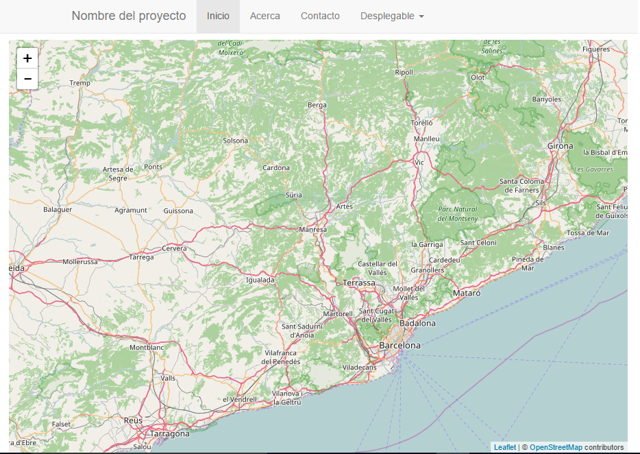
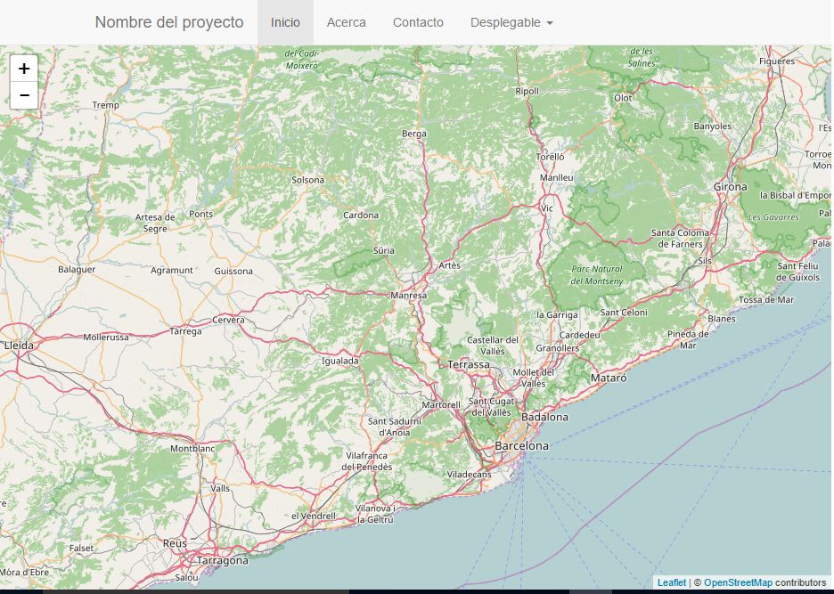

Note
| Fecha | Autores |
|---|---|
| 14 Febrero 2017 |
|
©2017 Wladimir Szczerban
Excepto donde quede reflejado de otra manera, la presente documentación se halla bajo licencia: Creative Commons (Creative Commons - Attribution - Share Alike: http://creativecommons.org/licenses/by-sa/3.0/deed.es)
Crearemos una página Web que contiene un template básico de Bootstrap y un mapa de Leaflet a pantalla completa.
Crear una carpeta llamada visor dentro del directorio htdocs del Apache.
C:\ms4w\Apache\htdocs\visor
Crear el archivo movil.html dentro de la carpeta visor. En este archivo crearemos la estructura básica del nuestro html con el template básico de Bootstrap. Para ello escribir los siguiente:
<!DOCTYPE html>
<html>
<head>
<title>visor responsivo con Leaflet</title>
<meta charset="utf-8">
<meta http-equiv="X-UA-Compatible" content="IE=edge,chrome=1">
<meta name="description" content="Demo project with jQuery">
<meta name="viewport" content="width=device-width, initial-scale=1">
<link rel="stylesheet" href="https://maxcdn.bootstrapcdn.com/bootstrap/3.3.7/css/bootstrap.min.css" integrity="sha384-BVYiiSIFeK1dGmJRAkycuHAHRg32OmUcww7on3RYdg4Va+PmSTsz/K68vbdEjh4u" crossorigin="anonymous">
<style type="text/css">
body > .container-fluid {
padding: 60px 15px 0;
}
</style>
</head>
<body>
<!-- Fixed navbar -->
<nav class="navbar navbar-default navbar-fixed-top">
<div class="container">
<div class="navbar-header">
<button type="button" class="navbar-toggle collapsed" data-toggle="collapse" data-target="#navbar" aria-expanded="false" aria-controls="navbar">
<span class="sr-only">Toggle navigation</span>
<span class="icon-bar"></span>
<span class="icon-bar"></span>
<span class="icon-bar"></span>
</button>
<a class="navbar-brand" href="#">Nombre del proyecto</a>
</div>
<div id="navbar" class="collapse navbar-collapse">
<ul class="nav navbar-nav">
<li class="active"><a href="#">Inicio</a></li>
<li><a href="#about">Acerca</a></li>
<li><a href="#contact">Contacto</a></li>
<li class="dropdown">
<a href="#" class="dropdown-toggle" data-toggle="dropdown" role="button" aria-haspopup="true" aria-expanded="false">Desplegable <span class="caret"></span></a>
<ul class="dropdown-menu">
<li><a href="#">Acción</a></li>
<li><a href="#">Otra acción</a></li>
<li><a href="#">Más acciones</a></li>
<li role="separator" class="divider"></li>
<li class="dropdown-header">Cabecera de navegación</li>
<li><a href="#">Enlace separado</a></li>
<li><a href="#">Otro enlace separado</a></li>
</ul>
</li>
</ul>
</div><!--/.nav-collapse -->
</div>
</nav>
<!-- Begin page content -->
<div id="container" class="container-fluid">
<h1>Hola mundo, Bootstrap!</h1>
</div>
</body>
<script src="https://code.jquery.com/jquery-3.1.1.min.js" integrity="sha256-hVVnYaiADRTO2PzUGmuLJr8BLUSjGIZsDYGmIJLv2b8="
crossorigin="anonymous"></script>
<script src="https://maxcdn.bootstrapcdn.com/bootstrap/3.3.7/js/bootstrap.min.js" integrity="sha384-Tc5IQib027qvyjSMfHjOMaLkfuWVxZxUPnCJA7l2mCWNIpG9mGCD8wGNIcPD7Txa" crossorigin="anonymous"></script>
<script type="text/javascript">
</script>
</html>
Abrir el navegador y ver que se muestra la barra de navegación de nuestra aplicación. Podemos ver que el texto Hola mundo, Bootstrap! queda debajo de la barra de navegación.
http://localhost:81/visor/movil.html
Cargar la librería de Leaflet. Debajo de donde cargamos la librería de bootstrap, escribir lo siguiente:
<script src="https://unpkg.com/leaflet@1.0.3/dist/leaflet.js"></script>
Cargar la hoja de estilo de Leaflet. Debajo de donde cargamos la hoja de estilo css del bootstrap, escribir lo siguiente:
<link rel="stylesheet" href="https://unpkg.com/leaflet@1.0.3/dist/leaflet.css" />
Sustituir el elemento h1 que se encuentra dentro del contenedor por el elemento div que contendrá el mapa. Debemos copiar lo siguiente dentro del container:
<div id="mapid"></div>
Justo al inicio del estilo:
html, body, #container {
height: 100%;
width: 100%;
overflow: hidden;
}
Al final del estilo:
#mapid {
display: block;
width: auto;
height: 100%;
}
Crear el objeto mapa y cargar la capa de OpenStreetMap. Para ellos escribir lo siguiente en el apartado de javascript (script) al final de la página.
var map = L.map('mapid').setView([41.68, 1.85], 9);
L.tileLayer('http://{s}.tile.osm.org/{z}/{x}/{y}.png', {
attribution: '© <a href="http://osm.org/copyright">OpenStreetMap</a> contributors'
}).addTo(map);
Recargamos la página en el navegador y debemos ver el mapa. Podemos observar que el mapa tiene un espacio en blanco en la parte superior y en los lados.
align: middle :alt: mapa con bordes

Para eliminar estos espacios en blanco y tener el mapa a pantalla completa debemos modificar el estilo body > .container-fluid, para ellos escribir:
body > .container-fluid {
padding: 50px 0 0 0;
}
Ahora si recargamos la página veremos el mapa a pantalla completa.
align: middle alt: mapa pantalla completa
